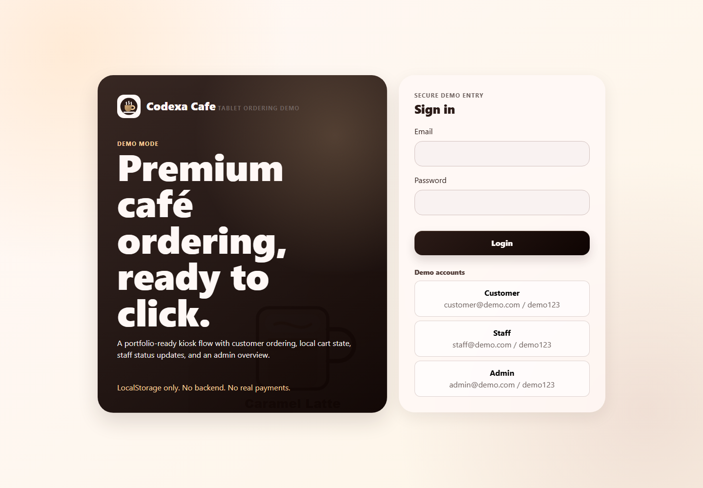

Problem addressed
Cafe operations need a clear customer ordering path, an organized preparation queue, inventory-aware management, and reliable administrative records.
Cafe Ordering, Staff Workflow & Management System
Status: Complete System with Accessible Demo Version. A connected ordering workflow for customers, staff, and administrators.
Project Overview
Cafe operations need a clear customer ordering path, an organized preparation queue, inventory-aware management, and reliable administrative records.
Customers placing orders, staff processing and updating orders, and administrators managing products, inventory, users, payments, and reports.
Choose a demo role → browse products → add items → review the cart → submit an order → update its status from the staff workflow.
The Vercel demo simulates customer, staff, and administrator behavior using browser data. It is not connected to complete-system backend services.
Demo Version Tech Stack
This section describes the technologies used by the accessible portfolio demo.
The demo has no connected production server, server database, production authentication, inventory authority, real payment processing, or cross-device order synchronization.
The accessible Codexa Cafe Kiosk demo uses browser-based data persistence so visitors can test customer, staff, and administrator workflows without requiring a connected production server.
Complete System Tech Stack
This section describes the complete technical architecture of the full business system, including frontend, backend, database, API, security, testing, and deployment.
The accessible portfolio version is optimized for demonstration and can run without a connected production server. The Complete System Tech Stack section documents the full technical architecture used for the complete business system version.
Demo Screen

customer@demo.com / demo123staff@demo.com / demo123admin@demo.com / demo123The public portfolio demo runs independently for easy access. Backend and database services are represented under the Complete System Architecture and are not connected to the public demonstration deployment.